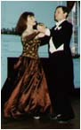

Waltz
Background
Prior to the 19th century, the form of dance accepted in polite society forbade touching anyone other than hand to hand. Although more aggressive postures were certainly practiced in the more casual environs, the "ballroom" pose was not known in polite society until the turn of the century. Yet, with the rise of the bourgeois, the "characterless tripping" of the English country dances, as described by an observer of the time, began to give way to the more zestful forms of the peasantry. What the age was seeking, it found in the close turning dances such as the Landler, from southern Germany. Character, spirit, expression, and passion -- everything that the new era demanded -- was found in the new waltz.
The Controversial Waltz
As with anything new, the waltz was regarded as controversial. In 1797, Salomo Jakob Wolf wrote a treatise called (English translation) "Proof that the waltz is a main source of the weakness of body and mind or our generation; most urgently recommended to the sons and daughters of Germany." Though the treatise sold out two editions, fortunately, few actually followed Wolf's recommendation.